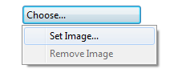
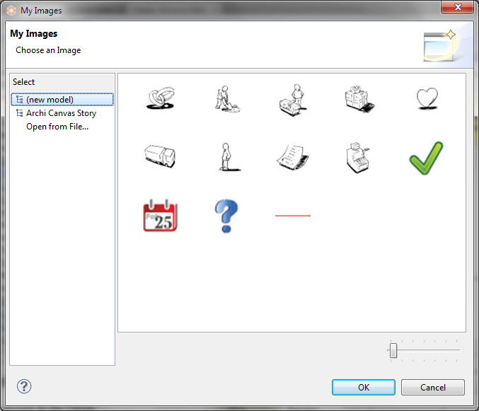

Canvas Blocks, Image place-holders and Stickies can contain images. The images in Blocks and Stickies are icons and are resized to a maximum width and height of 100 pixels. Images can be any size but we suggest that you keep them reasonably small so as not to consume too many resources.
To add an image to one of these elements, open the Properties window and select the element. Double-clicking the element on the Canvas will also open the Properties window. Find the Image tab in the Properties window and select the Image Chooser with the "Set Image..." option:

Selecting the Image Chooser from the Properties window
This will open the "My Images" Image Chooser dialog window:

The Image Chooser dialog window
All images that are contained in any loaded models are displayed in the Chooser so that you can re-use them. If you wish to open an image file from your computer select the "Open from File..." option.
 You can drag and drop Image files from the desktop to the Canvas.
You can drag and drop Image files from the desktop to the Canvas.
Removing an image from an element
To remove an image from an element select the "Remove Image" option from the Image Chooser.